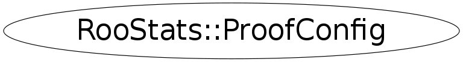

class RooStats::ProofConfig
Holds configuration options for proof and proof-lite. This class will be expanded in the future to hold more specific configuration options for the tools in RooStats.
Access to TProof::Mgr for configuration is still possible as usual (e.g. to set Root Version to be used on workers). You can do:
- TProof::Mgr("my.server.url")->ShowROOTVersions()
- TProof::Mgr("my.server.url")->SetROOTVersion("v5-27-06_dbg")
See doc: http://root.cern.ch/drupal/content/changing-default-root-version
Function Members (Methods)
public:
| virtual | ~ProofConfig() |
| static TClass* | Class() |
| static void | CloseProof(Option_t* option = "s") |
| const char* | GetHost() |
| Int_t | GetNExperiments() |
| Bool_t | GetShowGui() |
| RooWorkspace& | GetWorkspace() |
| virtual TClass* | IsA() const |
| RooStats::ProofConfig | ProofConfig(const RooStats::ProofConfig&) |
| RooStats::ProofConfig | ProofConfig(RooWorkspace& w, Int_t nExperiments = 8, const char* host = "", Bool_t showGui = kFALSE) |
| virtual void | ShowMembers(TMemberInspector& insp) |
| virtual void | Streamer(TBuffer& b) |
| void | StreamerNVirtual(TBuffer& b) |
Data Members
protected:
| const char* | fHost | Proof hostname. Use empty string (ie "") for proof-lite. Can also handle options like "workers=2" to run on two nodes. |
| Int_t | fNExperiments | number of experiments. This is sometimes called "events" in proof; "experiments" in RooStudyManager. |
| Bool_t | fShowGui | Whether to show the Proof Progress window. |
| RooWorkspace& | fWorkspace | workspace that is to be used with the RooStudyManager |
Class Charts
{kind=link}
{kind=link}
{kind=link}
{kind=link}

Function documentation
ProofConfig(RooWorkspace& w, Int_t nExperiments = 8, const char* host = "", Bool_t showGui = kFALSE)
virtual ~ProofConfig()